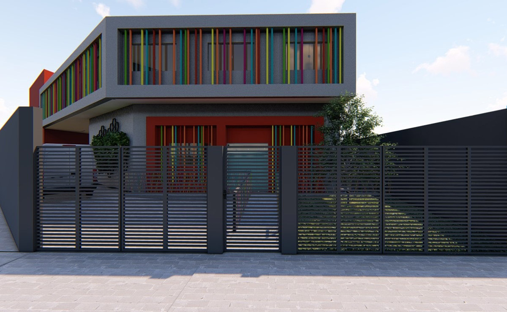

2023
- 150 animais resgatados
- 200 castrações realizadas
- 80 adoções concluídas
Somos uma organização dedicada ao resgate, tratamento e adoção responsável de animais abandonados.
Resgatar animais em situação de vulnerabilidade, proporcionar cuidados veterinários e encontrar lares amorosos para cada um deles.
Um mundo onde todos os animais tenham direito a uma vida digna, com amor, cuidado e respeito.
Fundada em 2015, a Patinhas Solidárias nasceu do sonho de um grupo de amigos que não suportava ver animais sofrendo nas ruas.
Desde então, já resgatamos mais de 500 animais, realizamos centenas de castrações gratuitas e promovemos campanhas de conscientização sobre posse responsável.
Maria Silva - Fundadora e Presidente
João Santos - Vice-presidente
Dra. Ana Paula - Veterinária Responsável
Dr. Carlos Eduardo - Veterinário
Contamos com mais de 50 voluntários ativos que dedicam seu tempo e amor aos animais.
Endereço: Rua das Flores, 123 - Centro - São Paulo/SP
CEP: 01234-567
Telefone: (11) 98765-4321
E-mail: contato@patinhassolidarias.org.br
Horário de Atendimento: Segunda a Sexta, das 9h às 18h
